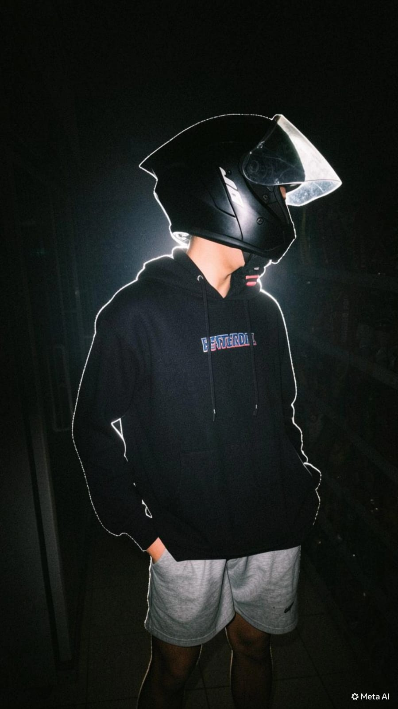
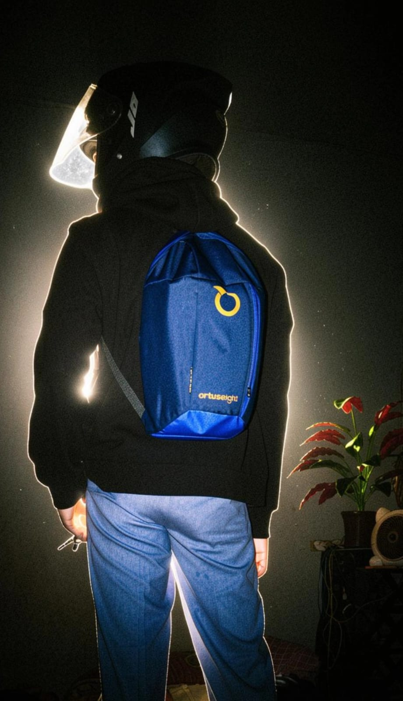
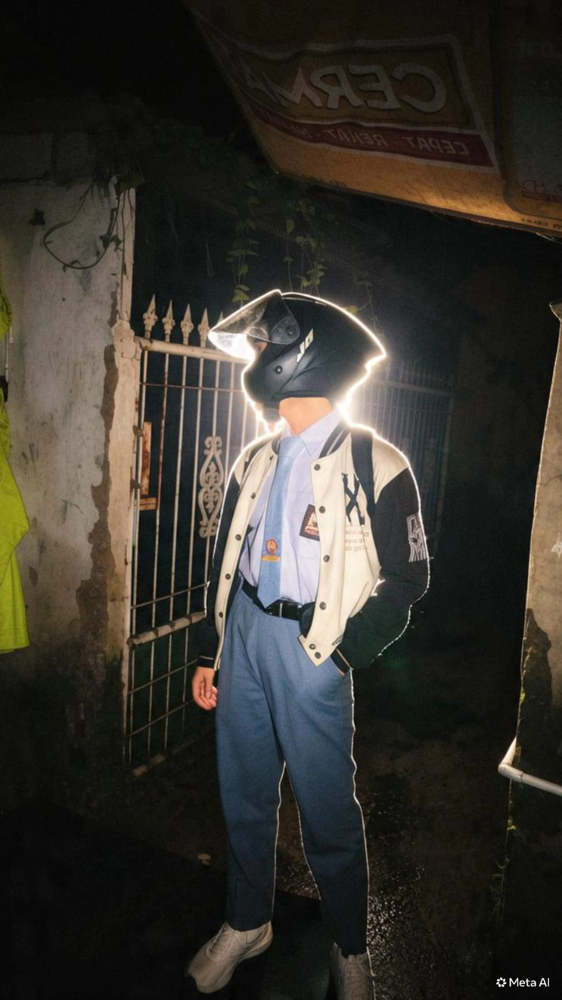

Akun Sosial Media Saya
Tempat saya menghubungi teman, keluarga, dan berbagi momen
Sosial Media Saya
Ini akun-akun yang sering saya buka saat waktu luang:
Tentang Saya dalam Grafik
Ringkasan singkat tentang saya:
🎵 TikTok
📸 Instagram
💬 WhatsApp
💻 Ngoding
📚 Belajar CSS
Skill yang Sedang Dipelajari
HTML CSS JavaScript Python PHPCerita Sedikit
Saya juga masih belajar ngoding dan belum terlalu paham cara mengedit di CSS. Tapi kalau saya tidak masuk jurusan RPL, saya tidak akan tahu apa itu ngoding seperti HTML, CSS, JS, Python, dan PHP. Jadi saya bersyukur bisa ada di jurusan ini. saya juga awal ingin masuk smk saya juga ingin masuk otomotif dan saya juga lumayan ngerti motor jadi saya juga suka modif motor walau tidak boleh sama orang tua saya
Foto Saya


